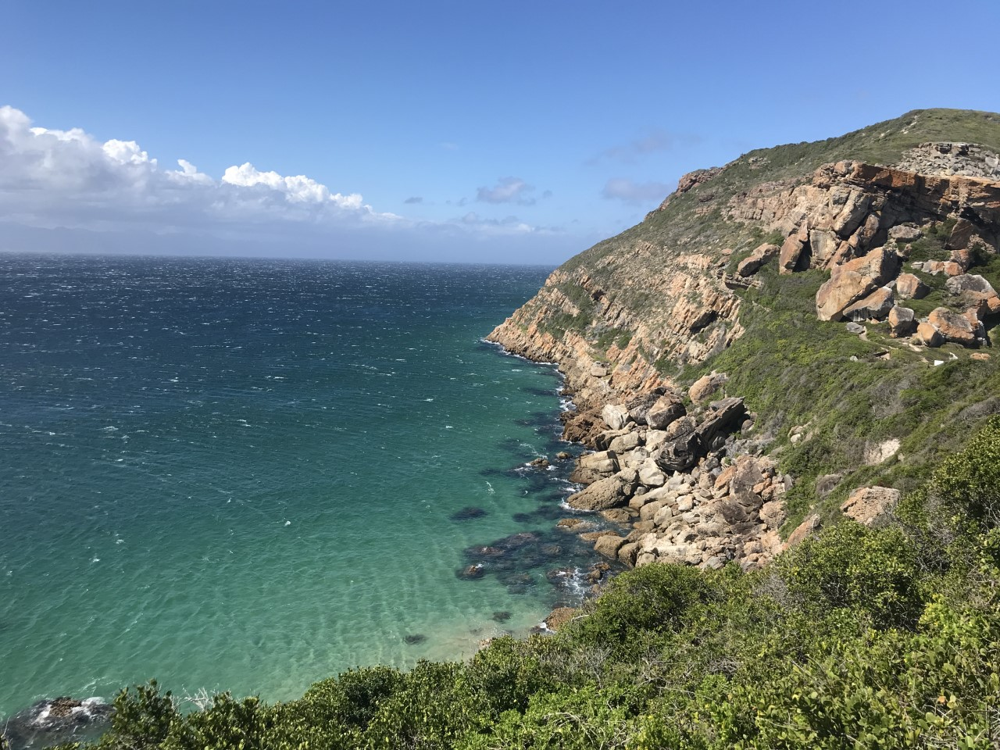
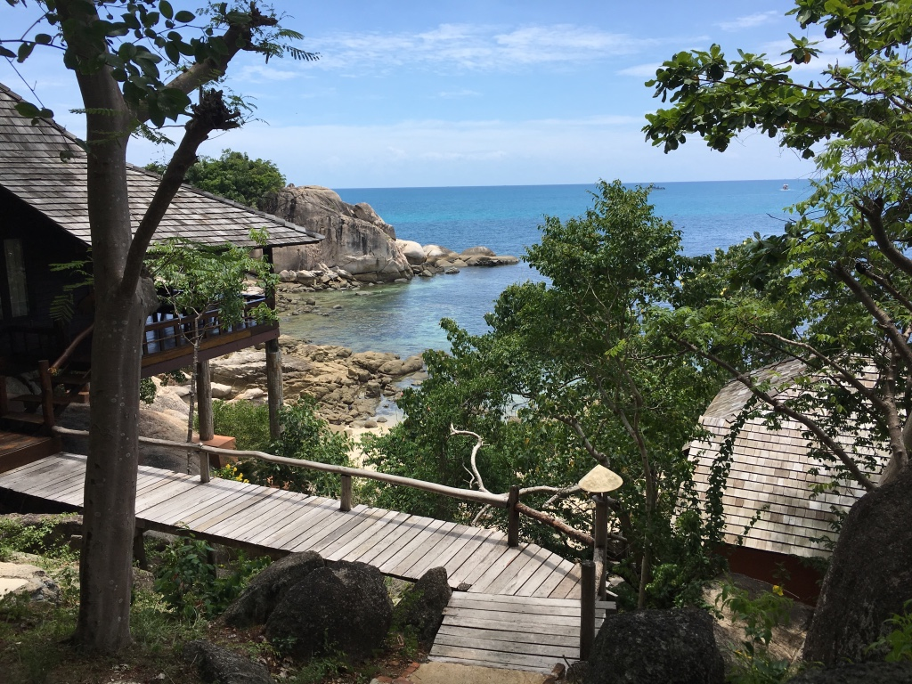
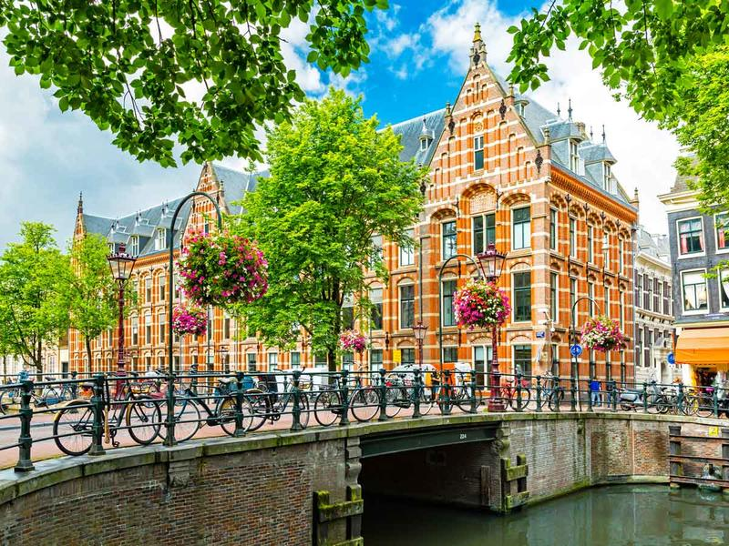

I was born on 18th November 1994 in Bloomington, IL, USA and moved to Germany at the age of two. So far, I had mainly been living in the beautiful wine region of Rhinehessen. I studied Culture and Business Administration at the University of Mannheim. During my free time I enjoy doing all kinds of sports such as yoga, boxing, bouldering, running and going to the gym. I also love to spend time with friends and family. Another passion of mine is music. I love to play the piano, guitar, ukulele and every once in a while I also sing. Other than that I try to travel around the world whenever possible.
Let's get in touch|  | South AfricaI traveled to South Africa to do an internship at Ormonde Winery near Cape Town in February 2018 to learn more about wine production. I fell in love with South Africa's scenic landscapes so much that I traveled there again in September 2018. Now, I have a lot of friends living there and it feels like a second home to me. |
|  | ThailandMy mom is actually half Thai, so I've got some family living in Thailand. I travel to Thailand every 1 to 2 years and I have also done my semester abroad in Bangkok in 2016. I love the kindness and happy smiles of people all around Thailand. It is a beautiful place to visit and the food is way too good! |
|  | NetherlandsContrary, to South Africa and Thailand, the Netherlands are pretty cold and rainy, but still there is something about the people and sweet cafés that I really adore. I love how much effort Dutchies put into interior design and also how present their space to the public by having huge windows allowing some insights to their home. |